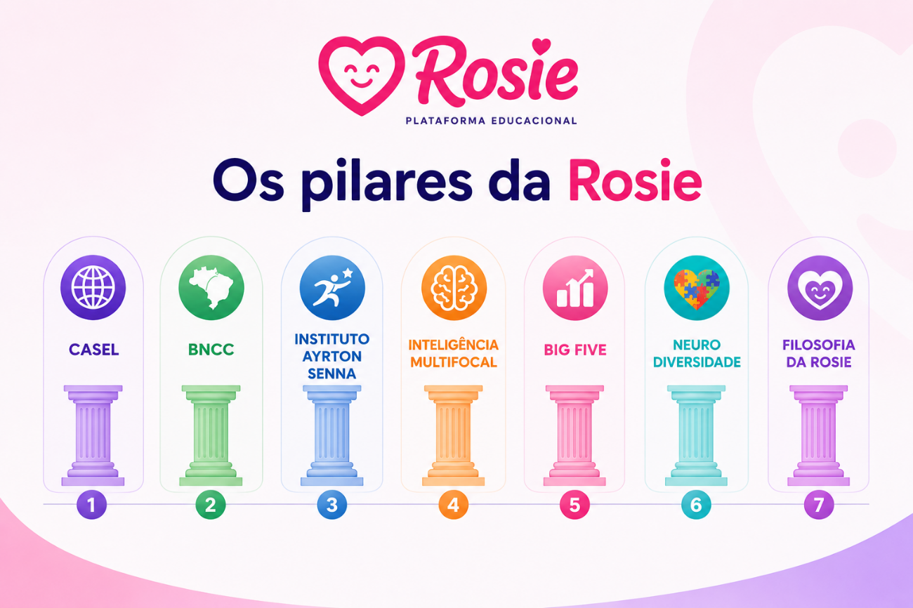
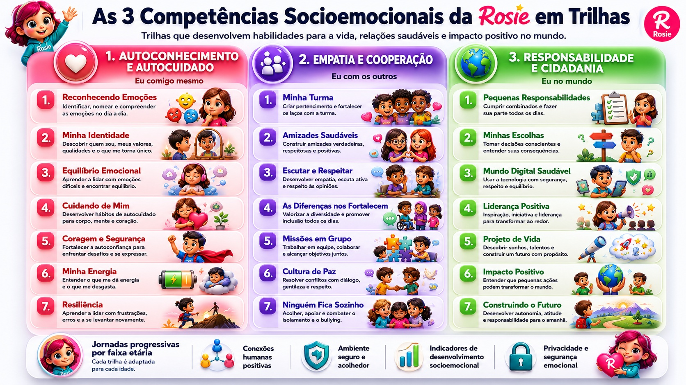
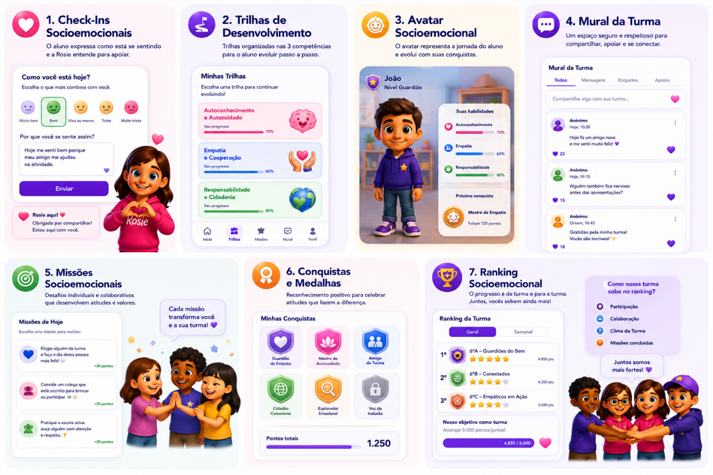
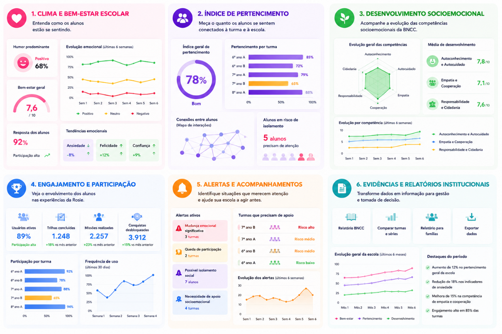

Transformando emoções em conexões.
A Rosie é uma plataforma educacional socioemocional assistida por IA para fortalecer pertencimento, bem-estar e desenvolvimento integral nos primeiros anos escolares.
Ver solução
O problema que a Rosie resolve
Escolas precisam enxergar o bem-estar emocional dos alunos, agir preventivamente e criar comunidades escolares mais acolhedoras.
Falta de pertencimento
Alunos isolados ou desconectados têm mais dificuldade de participar, aprender e construir relações saudáveis.
Bem-estar invisível
Mudanças emocionais muitas vezes só são percebidas quando já se tornaram conflitos ou crises.
Gestão sem dados
Educadores e gestores precisam de indicadores claros para orientar decisões pedagógicas.
Uma plataforma institucional
A Rosie une App da Turma, Dashboard Institucional e IA responsável para apoiar alunos, educadores e escolas.


App da Turma
Ambiente lúdico e seguro para crianças de 6 a 10 anos expressarem emoções, participarem de missões, evoluírem nas trilhas e construírem pertencimento com a turma.
Expressão segura
Check-ins e mural para ouvir os alunos com cuidado.
Gamificação saudável
Avatar, conquistas e medalhas sem competição individual tóxica.
Dashboard Institucional
Transforma dados do App da Turma em inteligência para professores, coordenação e gestão escolar.
Clima e bem-estar
Acompanha emoções, participação e evolução da turma.
Pertencimento
Monitora inclusão, conexão e possíveis sinais de isolamento.
Desenvolvimento
Mostra evolução nas competências socioemocionais.
Alertas preventivos
Apoia intervenções pedagógicas no momento certo.

IA responsável, humana e preventiva
A IA da Rosie não substitui educadores e não realiza diagnósticos clínicos. Ela organiza dados, identifica padrões, recomenda atividades e apoia decisões pedagógicas para fortalecer bem-estar, pertencimento e desenvolvimento socioemocional.
Para educadores
Resumos, alertas, recomendações e indicadores claros.
Para alunos
Jornadas personalizadas, missões adequadas e evolução lúdica.
Vamos construir escolas mais humanas?
Conheça a Rosie e veja como pertencimento, dados e IA responsável podem apoiar o desenvolvimento integral das crianças.
Falar com a Rosie